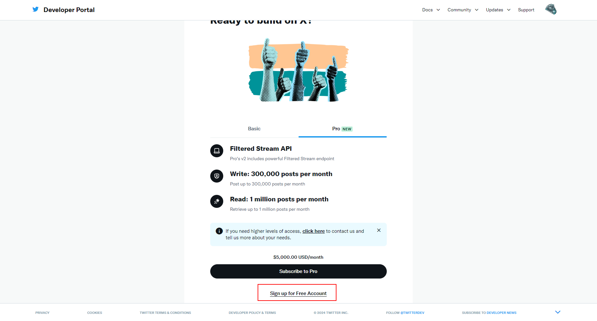
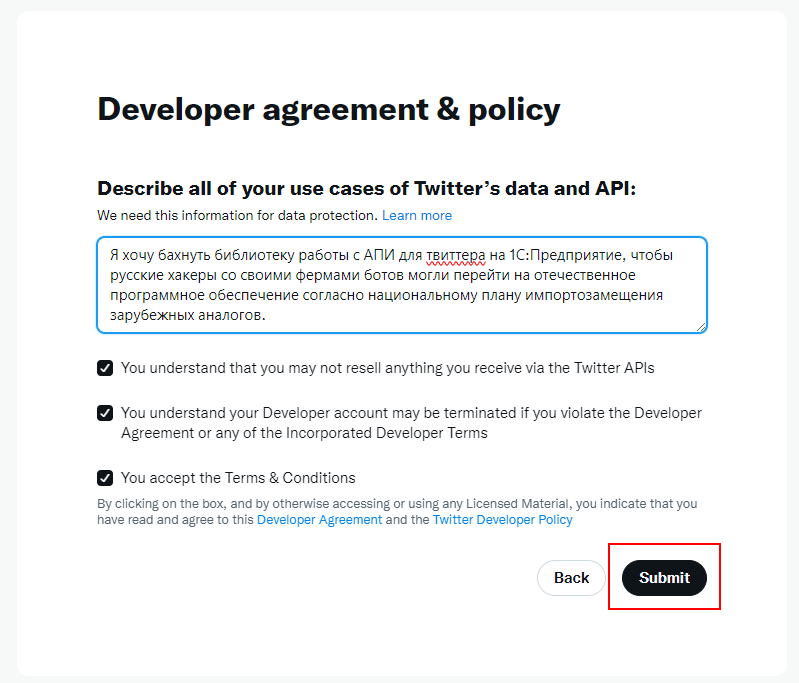
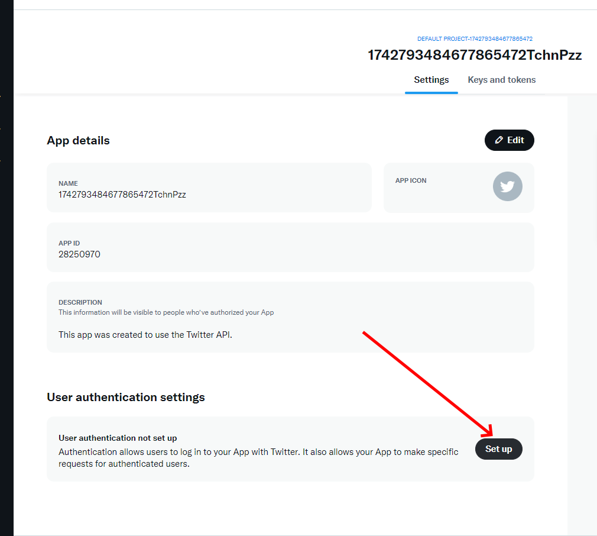
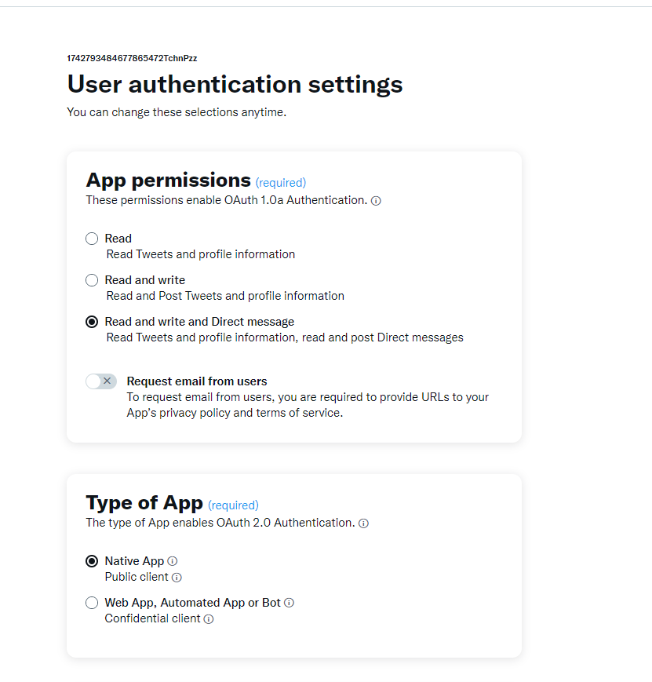
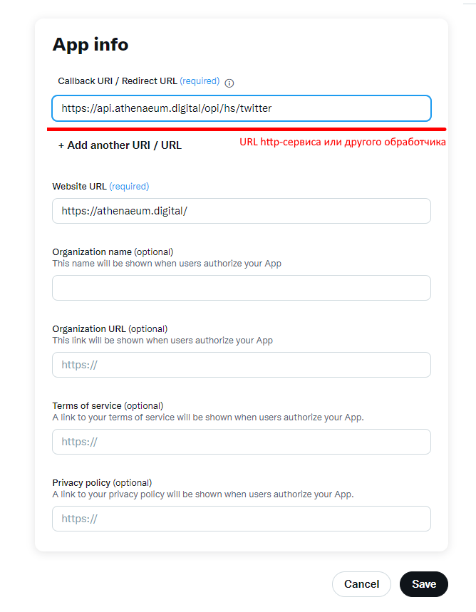
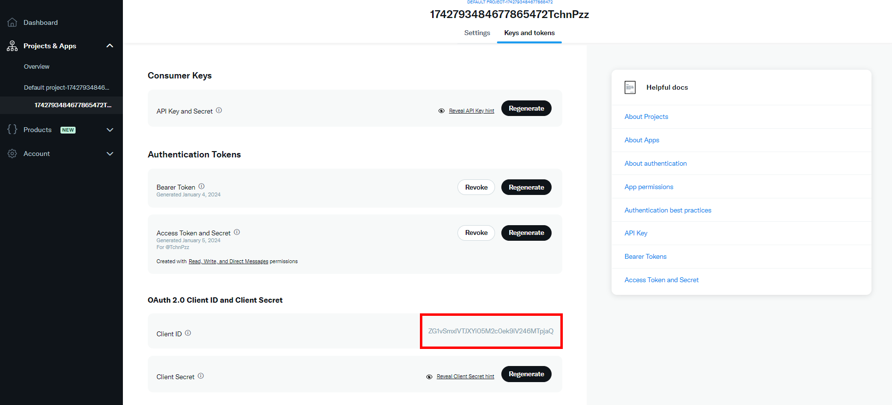
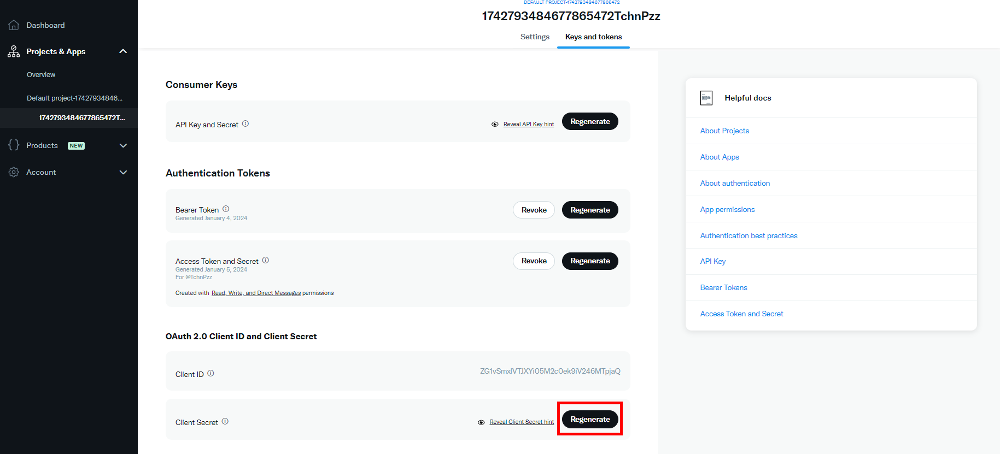
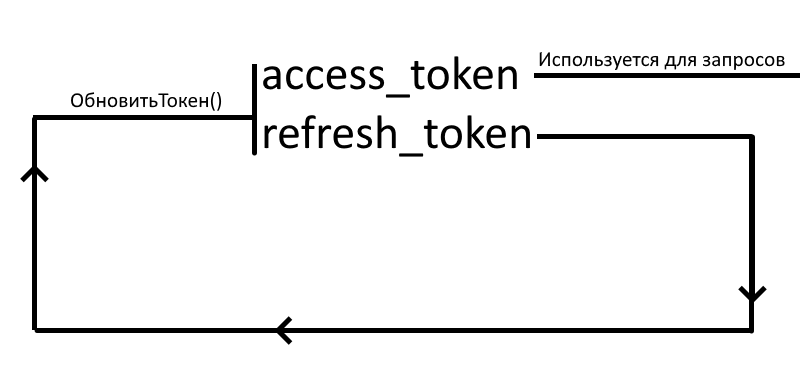
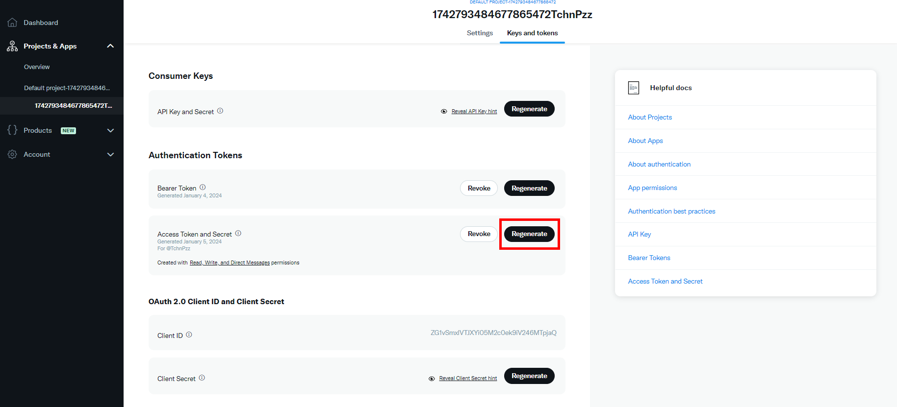
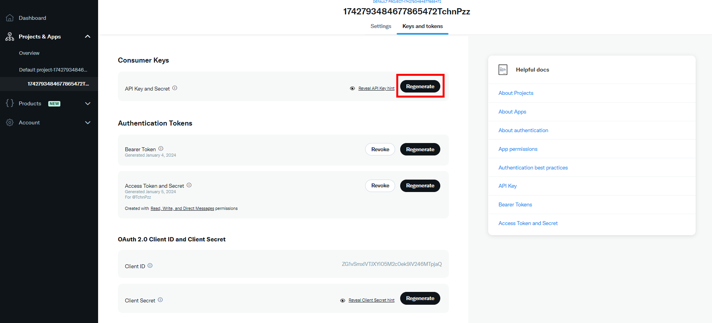

![]()
Twitter | X
Этот раздел посвящен библиотеке для работы с Twitter API в 1С:Предприятие, OneScript и CLI. На данной странице описаны все действия, необходимые для полноценного начала работы. Данная библиотека позволяет работать с функционалом бесплатного плана, т.е. создавать твиты.
Начало работы
Работа с Twitter подразумевает работу с двумя API - v1 (1.1) и v2, которые, при этом, не относятся к разным видам действий, но просто являются версиями друг друга. Несмотря на то, что Twitter настаивает на использовании v2, вышло так, что некоторые механизмы (в частности механизм загрузки файлов) в ней так и не появилися. Поэтому, даже для создания обычного твита с картинкой необходима работа с обеими версиями API, а, как следствие, двойной набор авторизационных данны. Этот набор описан в функции ПолучитьСтандартныеПараметры()
Параметры_.Вставить("redirect_uri" , "");
Параметры_.Вставить("scope" , "");
Параметры_.Вставить("client_id" , "");
Параметры_.Вставить("client_secret" , "");
Параметры_.Вставить("access_token" , "");
Параметры_.Вставить("refresh_token" , "");
Параметры_.Вставить("oauth_token" , "");
Параметры_.Вставить("oauth_token_secret" , "");
Параметры_.Вставить("oauth_consumer_key" , "");
Параметры_.Вставить("oauth_consumer_secret", "");
Вы можете определить эти параметры прямо в структуре внутри данной функции или передавать непосредственно при вызове функций уже для работы с API - каждая из них принимает параметры последним необязательным параметром. При такой передаче стандартные параметры будут перезаписаны по ключам. Рассмотрим создание приложения и получение каждого поля
Создание приложения
Для работы с Twitter API необходимо перейти по адресу https://developer.twitter.com/, зарегистрироваться и создать новое приложение
    
Определение полей
После создания приложения можно заполнить необходимые данные в 1С
-
redirect_uri
redirect_uri - адрес обработчика http-запросов, указанный при регистрации. Авторизация API v2 требует подтверждения входа через браузер, после которого запрос со специальным кодом на данный обработчик должен будет прийти. Далее об этом будет в пункте access_token и refresh_token.
-
scope
scope определяет доступные для работы функции. В ПолучитьСтандартныеПараметры() список scope определен по умолчанию.
-
client_id

-
client_secret

-
access_token и refresh_token
Эти токены необходимо получить http запросом с указанием кода, который приходит при авторизации на http-сервис redirect_uri. Порядок действий:
- Создать ссылку для авторизации в браузере при помощи функции Пол учитьСсылкуАвторизации
- Добавить в модуль http-сервиса (GET) вызов функции ОбработкаВходящегоЗапросаПослеАвторизации, передавая HTTPСервисЗапрос как параметр.
- Авторизоваться в браузере по ссылке из п.1.
- Сохранить access_token и refresh_token, полученный из функции ОбработкаВходящегоЗапросаПослеАвторизации п. 2, в константы или другое хранилище
Получение
Функция Twitterget(Запрос)
Код = Запрос.ПараметрыЗапроса["code"];
ОтветТокен = OPI_Twitter.ПолучитьТокен(Код, Параметры);
Константы.TwitterRefresh.Установить(ОтветТокен["refresh_token"]);
Константы.TwitterToken.Установить(ОтветТокен["access_token"]);
Ответ = Новый HTTPСервисОтвет(200);
Возврат Ответ;
КонецФункцииОбновление
Процедура ОбновлятьТокенКаждыеДваЧаса(Знач Параметры)
Ответ = OPI_Twitter.ОбновитьТокен(Параметры);
Константы.TwitterToken.Установить(Ответ["access_token"]);
Константы.TwitterRefresh.Установить(Ответ["refresh_token"]);
КонецПроцедурыХардкодить данные токены нельзя, так как acess_token действует всего 2 часа. По истечении этого времени, токен необходимо обновить функцией ОбновитьТокен. При этом обновляется как access_token, так и refresh_token. Т.е. при следующем обновлении сгоревшего acess_token токена, refresh_token должен быть из предыдущего запроса.

-
oauth_token и oauth_token_secret

-
oauth_consumer_key и oauth_consumer_secret

После заполнени я данных полей можно приступать к работе с методами API